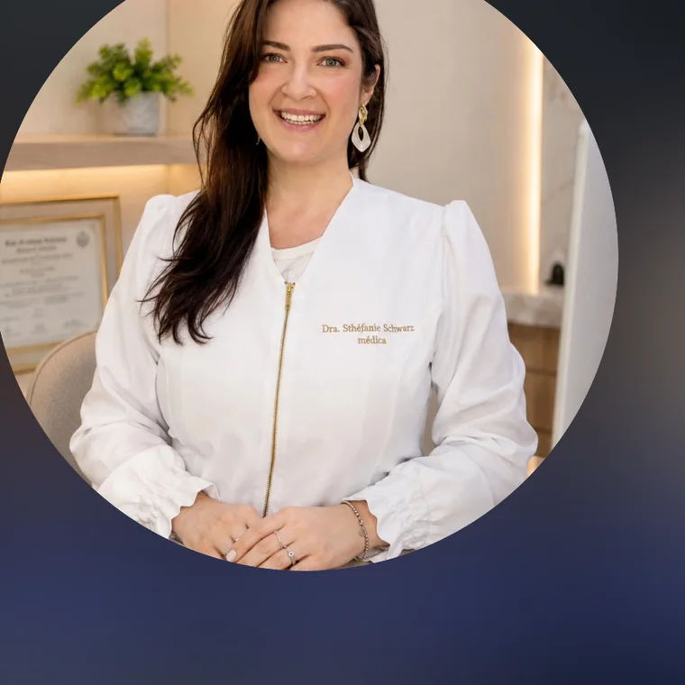

Cuidado, atenção e acolhimento
Dra. Sthéfanie
Schwarz
Médica • CRM-PR 60163
Um espaço para conhecer as áreas de atuação, obter informações sobre os atendimentos e entrar em contato com facilidade.

Conheça os atendimentos
Áreas de atuação
Informações objetivas sobre os serviços. Cada área poderá apresentar um vídeo explicativo, adicionado quando estiver disponível.
Apresentação profissional
Conheça a Dra. Sthéfanie
Médica com atendimento em Cascavel e região. Este espaço poderá receber uma apresentação pessoal, trajetória profissional, formação e informações complementares fornecidas pela médica.
Entre em contato
Vamos conversar?
Atendimento em Cascavel e região. Consulte informações e disponibilidade pelo WhatsApp.